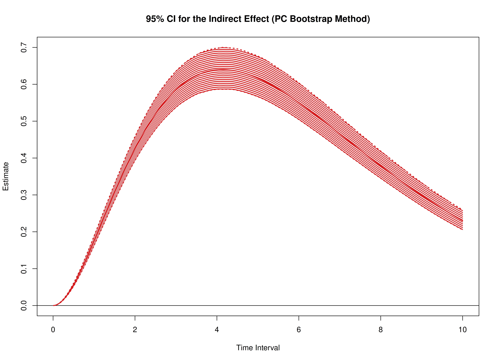
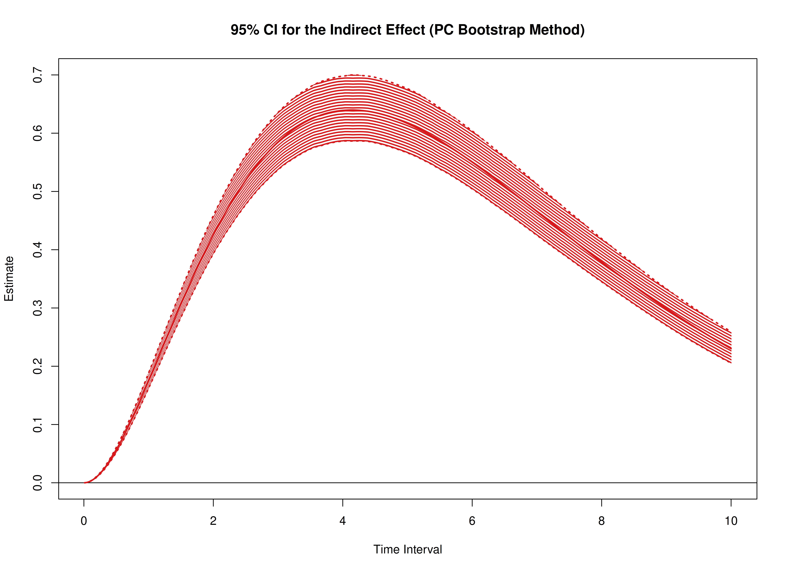
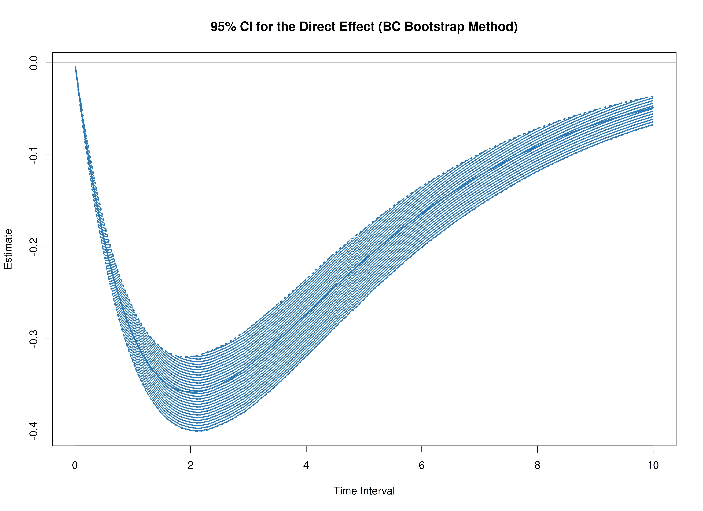
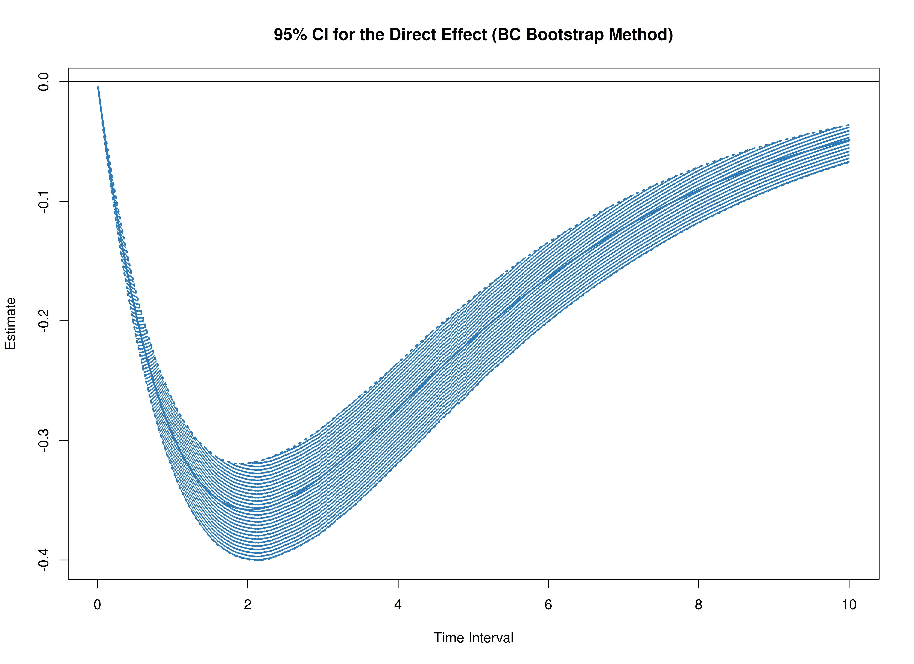

Total, Direct, and Indirect Effects in Continuous-Time Mediation Model (Bootstrap)
Ivan Jacob Agaloos Pesigan
2025-08-25
Source:vignettes/med-boot.Rmd
med-boot.RmdThe cTMed package provides a bootstrap approach, in
addition to the delta and Monte Carlo methods, for estimating and
quantifying uncertainty in total, direct, and indirect effects within
continuous-time mediation models across different time intervals.
In this example, we will use the fitted model from Fit
the Continuous-Time Vector Autoregressive Model Using the dynr
Package. The object fit represents a fitted CT-VAR
model created using the dynr package.
summary(fit)
#> Coefficients:
#> Estimate Std. Error t value ci.lower ci.upper Pr(>|t|)
#> phi_1_1 -0.3518738 0.0345599 -10.182 -0.4196100 -0.2841377 <2e-16 ***
#> phi_2_1 0.7442754 0.0213025 34.938 0.7025233 0.7860275 <2e-16 ***
#> phi_3_1 -0.4586681 0.0224194 -20.459 -0.5026093 -0.4147269 <2e-16 ***
#> phi_1_2 0.0173316 0.0304068 0.570 -0.0422645 0.0769278 0.2843
#> phi_2_2 -0.4888138 0.0188377 -25.949 -0.5257350 -0.4518927 <2e-16 ***
#> phi_3_2 0.7267855 0.0198254 36.659 0.6879284 0.7656426 <2e-16 ***
#> phi_1_3 -0.0238213 0.0233767 -1.019 -0.0696387 0.0219962 0.1541
#> phi_2_3 -0.0098181 0.0144220 -0.681 -0.0380848 0.0184485 0.2480
#> phi_3_3 -0.6883228 0.0152967 -44.998 -0.7183038 -0.6583418 <2e-16 ***
#> sigma_1_1 0.2421847 0.0064484 37.557 0.2295461 0.2548232 <2e-16 ***
#> sigma_2_1 0.0232727 0.0025183 9.241 0.0183369 0.0282084 <2e-16 ***
#> sigma_3_1 -0.0505753 0.0026989 -18.739 -0.0558649 -0.0452856 <2e-16 ***
#> sigma_2_2 0.0707197 0.0018899 37.420 0.0670155 0.0744238 <2e-16 ***
#> sigma_3_2 0.0149893 0.0013541 11.070 0.0123354 0.0176433 <2e-16 ***
#> sigma_3_3 0.0723762 0.0020868 34.683 0.0682861 0.0764663 <2e-16 ***
#> theta_1_1 0.1988610 0.0011588 171.608 0.1965898 0.2011323 <2e-16 ***
#> theta_2_2 0.1995204 0.0009996 199.609 0.1975613 0.2014795 <2e-16 ***
#> theta_3_3 0.2011716 0.0010145 198.288 0.1991832 0.2031601 <2e-16 ***
#> mu0_1_1 0.0062149 0.1219710 0.051 -0.2328439 0.2452737 0.4797
#> mu0_2_1 -0.0425006 0.1208284 -0.352 -0.2793200 0.1943187 0.3625
#> mu0_3_1 0.1300648 0.1041761 1.249 -0.0741167 0.3342462 0.1059
#> sigma0_1_1 1.1504264 0.1810442 6.354 0.7955863 1.5052665 <2e-16 ***
#> sigma0_2_1 0.4136629 0.1418008 2.917 0.1357384 0.6915875 0.0018 **
#> sigma0_3_1 0.2260142 0.1187792 1.903 -0.0067889 0.4588172 0.0285 *
#> sigma0_2_2 1.2218038 0.1985814 6.153 0.8325914 1.6110161 <2e-16 ***
#> sigma0_3_2 0.2353104 0.1267133 1.857 -0.0130432 0.4836640 0.0317 *
#> sigma0_3_3 0.9626701 0.1594441 6.038 0.6501655 1.2751747 <2e-16 ***
#> ---
#> Signif. codes: 0 '***' 0.001 '**' 0.01 '*' 0.05 '.' 0.1 ' ' 1
#>
#> -2 log-likelihood value at convergence = 429365.49
#> AIC = 429419.49
#> BIC = 429676.34We need to extract the estimated parameters from the fitted object, which will be used to generate bootstrap samples.
est <- coef(fit)
n
#> [1] 100
time
#> [1] 1000
delta_t
#> [1] 0.1
lambda
#> [,1] [,2] [,3]
#> [1,] 1 0 0
#> [2,] 0 1 0
#> [3,] 0 0 1
nu
#> [1] 0 0 0
mu
#> [1] 0 0 0
mu0 <- est[
c(
"mu0_1_1",
"mu0_2_1",
"mu0_3_1"
)
]
mu0
#> mu0_1_1 mu0_2_1 mu0_3_1
#> 0.006214893 -0.042500647 0.130064755
sigma0 <- matrix(
data = est[
c(
"sigma0_1_1",
"sigma0_2_1",
"sigma0_3_1",
"sigma0_2_1",
"sigma0_2_2",
"sigma0_3_2",
"sigma0_3_1",
"sigma0_3_2",
"sigma0_3_3"
)
],
nrow = 3,
ncol = 3
)
sigma0
#> [,1] [,2] [,3]
#> [1,] 1.1504264 0.4136629 0.2260142
#> [2,] 0.4136629 1.2218038 0.2353104
#> [3,] 0.2260142 0.2353104 0.9626701
sigma0_l <- t(chol(sigma0))
phi <- matrix(
data = est[
c(
"phi_1_1",
"phi_2_1",
"phi_3_1",
"phi_1_2",
"phi_2_2",
"phi_3_2",
"phi_1_3",
"phi_2_3",
"phi_3_3"
)
],
nrow = 3,
ncol = 3
)
phi
#> [,1] [,2] [,3]
#> [1,] -0.3518738 0.01733165 -0.023821271
#> [2,] 0.7442754 -0.48881381 -0.009818147
#> [3,] -0.4586681 0.72678550 -0.688322785
sigma <- matrix(
data = est[
c(
"sigma_1_1", "sigma_2_1", "sigma_3_1",
"sigma_2_1", "sigma_2_2", "sigma_3_2",
"sigma_3_1", "sigma_3_2", "sigma_3_3"
)
],
nrow = 3,
ncol = 3
)
sigma
#> [,1] [,2] [,3]
#> [1,] 0.24218466 0.02327267 -0.05057526
#> [2,] 0.02327267 0.07071965 0.01498933
#> [3,] -0.05057526 0.01498933 0.07237617
sigma_l <- t(chol(sigma))
theta <- diag(3)
diag(theta) <- est[
c(
"theta_1_1",
"theta_2_2",
"theta_3_3"
)
]
theta
#> [,1] [,2] [,3]
#> [1,] 0.198861 0.0000000 0.0000000
#> [2,] 0.000000 0.1995204 0.0000000
#> [3,] 0.000000 0.0000000 0.2011716
theta_l <- t(chol(theta))
R <- 1000L # use at least 1000 in actual research
path <- getwd()
prefix <- "ou"The estimated parameters are then passed as arguments to the
PBSSMOUFixed function from the bootStateSpace
package, which generates a parametric bootstrap sampling distribution of
the parameter estimates. The argument R specifies the
number of bootstrap replications. The generated data and model estimates
are stored in path using the specified prefix
for the file names. The ncores = parallel::detectCores()
argument instructs the function to use all available CPU cores in the
system.
NOTE: Fitting the CT-VAR model multiple times is computationally intensive.
library(bootStateSpace)
start <- Sys.time()
boot <- PBSSMOUFixed(
R = R,
path = path,
prefix = prefix,
n = n,
time = time,
delta_t = delta_t,
mu0 = mu0,
sigma0_l = sigma0_l,
mu = mu,
phi = phi,
sigma_l = sigma_l,
nu = nu,
lambda = lambda,
theta_l = theta_l,
ncores = parallel::detectCores(),
seed = 42
)
end <- Sys.time()
elapsed <- end - start
elapsed
#> Time difference of 6.93455 hoursThe extract function from the
bootStateSpace package is used to extract the bootstrap phi
matrices as well as the sigma matrices.
phi <- extract(object = boot, what = "phi")
sigma <- extract(object = boot, what = "sigma")In this example, we aim to calculate the total, direct, and indirect
effects of x on y, mediated through
m, over time intervals ranging from 0 to 10.
# time intervals
delta_t <- seq(from = 0, to = 10, length.out = 1000)We also need the estimated drift matrix from the original sample.
# estimated drift matrix
phi_hat <- matrix(
data = est[
c(
"phi_1_1",
"phi_2_1",
"phi_3_1",
"phi_1_2",
"phi_2_2",
"phi_3_2",
"phi_1_3",
"phi_2_3",
"phi_3_3"
)
],
nrow = 3,
ncol = 3
)
colnames(phi_hat) <- rownames(phi_hat) <- c("x", "m", "y")For the standardized effects, the estimated process noise covariance matrix from the original sample is also needed.
# estimated process noise covariance matrix
sigma_hat <- matrix(
data = est[
c(
"sigma_1_1", "sigma_2_1", "sigma_3_1",
"sigma_2_1", "sigma_2_2", "sigma_3_2",
"sigma_3_1", "sigma_3_2", "sigma_3_3"
)
],
nrow = 3,
ncol = 3
)Bootstrap Method
library(cTMed)
start <- Sys.time()
boot <- BootMed(
phi = phi,
phi_hat = phi_hat,
delta_t = delta_t,
from = "x",
to = "y",
med = "m",
ncores = parallel::detectCores() # use multiple cores
)
end <- Sys.time()
elapsed <- end - start
elapsed
#> Time difference of 8.873092 mins
plot(boot)

#> NULL
plot(boot, type = "bc")


#> NULLThe following generates bootstrap confidence intervals for the standardized effects.
start <- Sys.time()
boot <- BootMedStd(
phi = phi,
sigma = sigma,
phi_hat = phi_hat,
sigma_hat = sigma_hat,
delta_t = delta_t,
from = "x",
to = "y",
med = "m",
ncores = parallel::detectCores() # use multiple cores
)
#> Warning in cleanup(mc.cleanup): unable to terminate child: No such process
#> Warning in cleanup(mc.cleanup): unable to terminate child: No such process
end <- Sys.time()
elapsed <- end - start
elapsed
#> Time difference of 10.16936 mins
plot(boot)
 

#> NULL
plot(boot, type = "bc") 

#> NULL